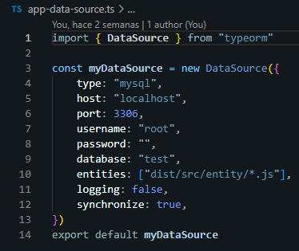
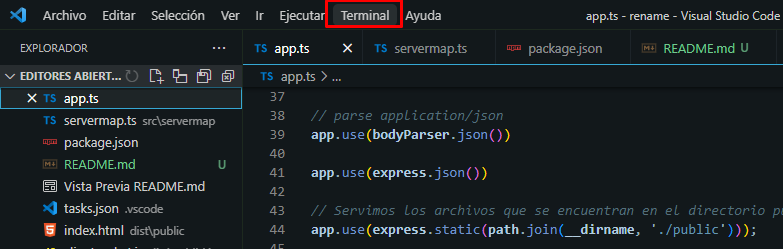
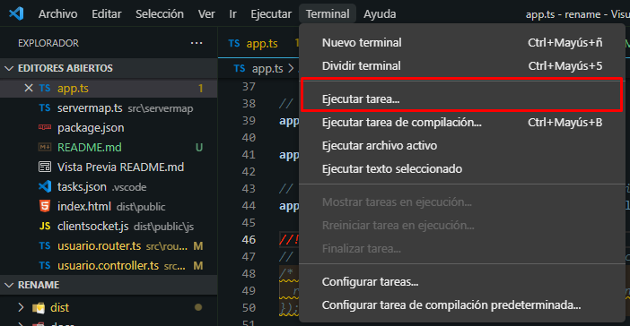
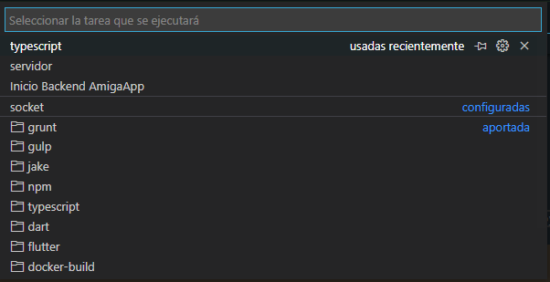
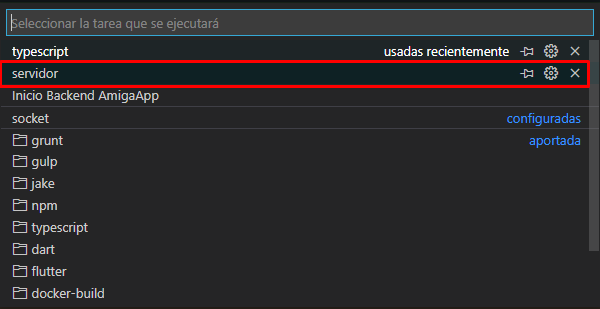
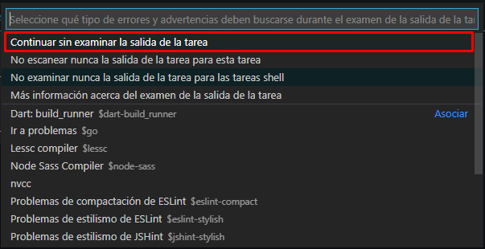
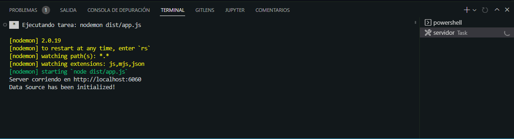

Configuracion inicial:
npm run install
NOTA: Antes de correr el proyecto verificar tener instalado las siguientes dependencias:
npm install -g typescript
npm install -g nodemon
Verificar que la aplicación xampp este corriendo, en el puerto '3006', si no tienen xampp utilicen cualquier otro gestor de db.
El archivo de configuracion de la base de datos es 'app-data-source.ts'
NOTA: Si no les corre me comentan.
Ir al menu 'Terminal': 
Dar click en la opcion 'Ejecutar tarea': 
Aparece esta ventana: 
NOTA: Solo ejecuten el que dice 'servidor'.
Aparece esta ventana, dar clic en la opcion indicada. 
Revisar que en la salida de la terminal este corriendo el servidor. 
Generated using TypeDoc